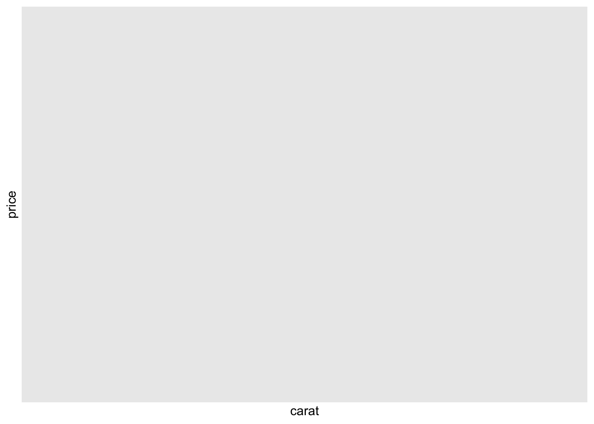
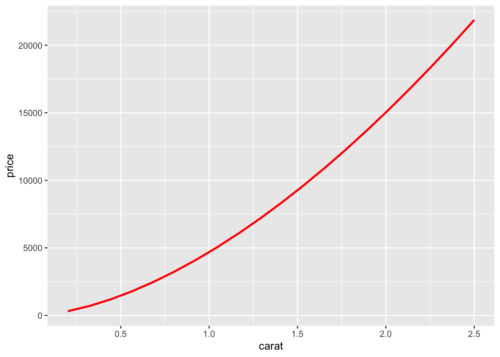

In the previous chapter you learned how linear models work, and learned some basic tools for understanding what a model is telling you about your data. The previous chapter focussed on simulated datasets. This chapter will focus on real data, showing you how you can progressively build up a model to aid your understanding of the data.
We will take advantage of the fact that you can think about a model partitioning your data into pattern and residuals. We’ll find patterns with visualisation, then make them concrete and precise with a model. We’ll then repeat the process, but replace the old response variable with the residuals from the model. The goal is to transition from implicit knowledge in the data and your head to explicit knowledge in a quantitative model. This makes it easier to apply to new domains, and easier for others to use.
For very large and complex datasets this will be a lot of work. There are certainly alternative approaches - a more machine learning approach is simply to focus on the predictive ability of the model. These approaches tend to produce black boxes: the model does a really good job at generating predictions, but you don’t know why. This is a totally reasonable approach, but it does make it hard to apply your real world knowledge to the model. That, in turn, makes it difficult to assess whether or not the model will continue to work in the long-term, as fundamentals change. For most real models, I’d expect you to use some combination of this approach and a more classic automated approach.
It’s a challenge to know when to stop. You need to figure out when your model is good enough, and when additional investment is unlikely to pay off.
Prerequisites
We’ll use the same tools as in the previous chapter, but add in some real datasets: diamonds from ggplot2, and flights from nycflights13. We’ll also need lubridate in order to work with the date/times in flights.
library(tidyverse)
── Attaching core tidyverse packages ──────────────────────── tidyverse 2.0.0 ──
✔ dplyr 1.1.4 ✔ readr 2.1.5
✔ forcats 1.0.0 ✔ stringr 1.5.1
✔ ggplot2 3.5.2 ✔ tibble 3.3.0
✔ lubridate 1.9.4 ✔ tidyr 1.3.1
✔ purrr 1.1.0
── Conflicts ────────────────────────────────────────── tidyverse_conflicts() ──
✖ dplyr::filter() masks stats::filter()
✖ dplyr::lag() masks stats::lag()
ℹ Use the conflicted package (<http://conflicted.r-lib.org/>) to force all conflicts to become errors
In previous chapters we’ve seen a surprising relationship between the quality of diamonds and their price: low quality diamonds (poor cuts, bad colours, and inferior clarity) have higher prices.
Note that the worst diamond color is J (slightly yellow), and the worst clarity is I1 (inclusions visible to the naked eye).
Price and carat
It looks like lower quality diamonds have higher prices because there is an important confounding variable: the weight (carat) of the diamond. The weight of the diamond is the single most important factor for determining the price of the diamond, and lower quality diamonds tend to be larger.
Warning: Computation failed in `stat_binhex()`.
Caused by error in `compute_group()`:
! The package "hexbin" is required for `stat_bin_hex()`.

We can make it easier to see how the other attributes of a diamond affect its relative price by fitting a model to separate out the effect of carat. But first, lets make a couple of tweaks to the diamonds dataset to make it easier to work with:
Focus on diamonds smaller than 2.5 carats (99.7% of the data)
Warning: Computation failed in `stat_binhex()`.
Caused by error in `compute_group()`:
! The package "hexbin" is required for `stat_bin_hex()`.
The log-transformation is particularly useful here because it makes the pattern linear, and linear patterns are the easiest to work with. Let’s take the next step and remove that strong linear pattern. We first make the pattern explicit by fitting a model:
mod_diamond <-lm(lprice ~ lcarat, data = diamonds2)
Then we look at what the model tells us about the data. Note that I back transform the predictions, undoing the log transformation, so I can overlay the predictions on the raw data:
Warning: Using `size` aesthetic for lines was deprecated in ggplot2 3.4.0.
ℹ Please use `linewidth` instead.
Warning: Computation failed in `stat_binhex()`.
Caused by error in `compute_group()`:
! The package "hexbin" is required for `stat_bin_hex()`.

That tells us something interesting about our data. If we believe our model, then the large diamonds are much cheaper than expected. This is probably because no diamond in this dataset costs more than $19,000.
Now we can look at the residuals, which verifies that we’ve successfully removed the strong linear pattern:
Now we see the relationship we expect: as the quality of the diamond increases, so too does its relative price. To interpret the y axis, we need to think about what the residuals are telling us, and what scale they are on. A residual of -1 indicates that lprice was 1 unit lower than a prediction based solely on its weight. 2−12−1 is 1/2, points with a value of -1 are half the expected price, and residuals with value 1 are twice the predicted price.